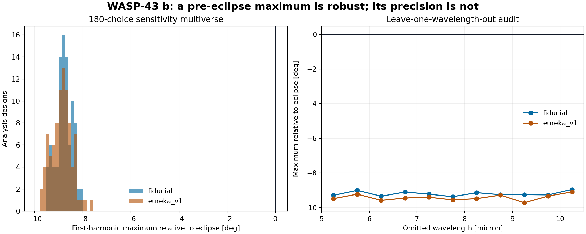
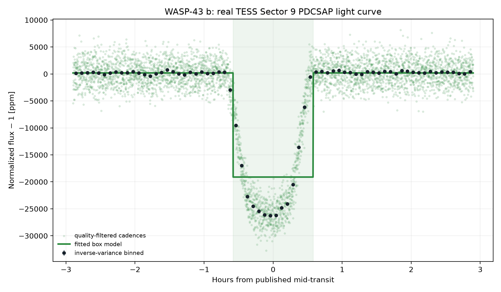
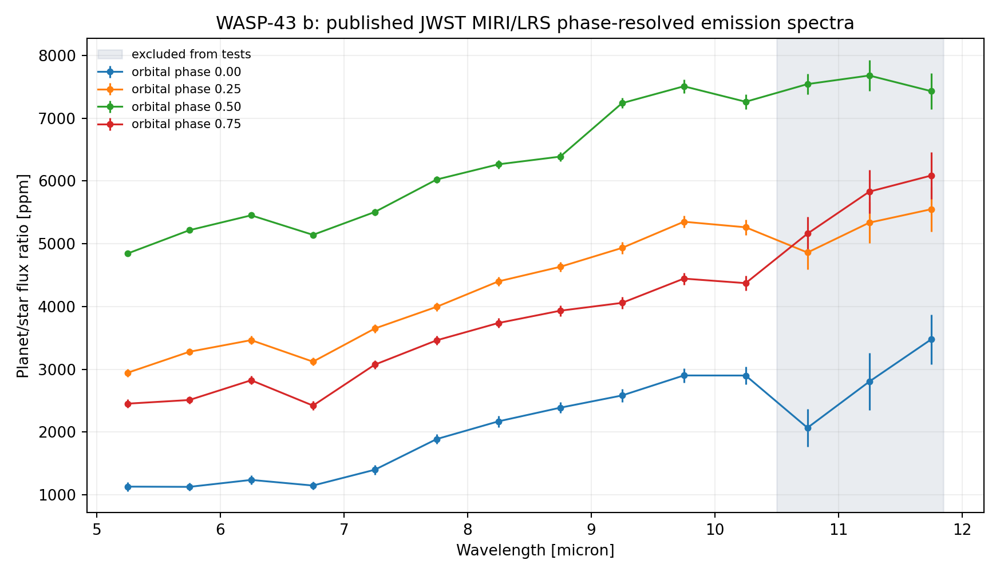
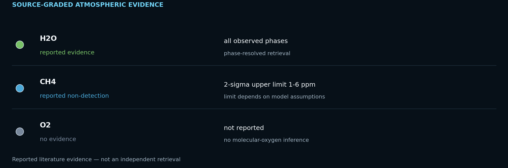
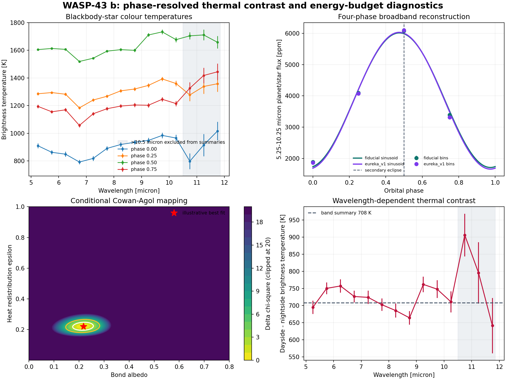
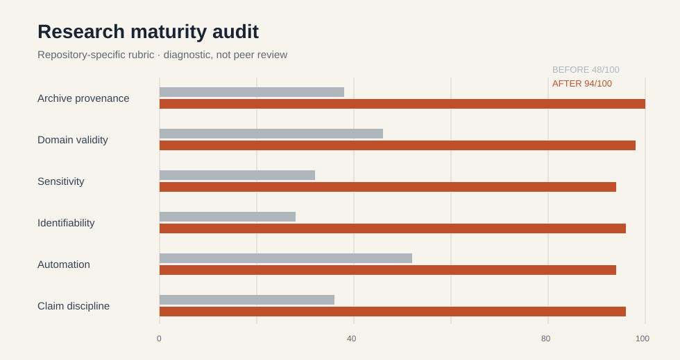

Bottom line
The direction survives. The quoted precision does not.
All 180 predeclared analysis designs place the first-harmonic maximum before eclipse, from −9.71° to −7.66°. That supports a pre-eclipse thermal maximum under a one-harmonic summary.
Four phase bins identify only three first-harmonic coefficients with one residual degree of freedom. The five-parameter, two-harmonic model preferred by the source time-series analysis is rank-deficient here. A formal ±0.45° error therefore cannot be interpreted as a complete hotspot-location uncertainty.
Specification sensitivity
180 ways to ask the same restrained question
The multiverse crosses two reductions, three lower wavelength bounds, five upper bounds, three band-aggregation rules, and two asymmetric-error conventions. Every design remains pre-eclipse; the 2.06° envelope is a more honest analysis-choice summary than a single formal covariance error.

Independent TESS diagnostic
What the corrected transit fit shows
This is a timing-adjusted, single-sector diagnostic with fixed limb darkening—not a global ephemeris or system-parameter retrieval.

Trusted domain first
Four published spectra, eleven inferential bins
The archive contains 14 wavelength bins at each of four orbital phases. The source paper restricts its final analysis to 5–10.5 µm because the 10.6–11.8 µm shadowed region could not be detrended reliably. This report now follows that boundary: all bins remain visible and preserved, but weighted-flat and linear tests use only the 11 centres from 5.25–10.25 µm.

Atmospheric evidence: detection, limit, or unknown?
The archived MIRI spectra reproduce strong wavelength structure at four orbital phases. Published retrievals attribute features to water and place an upper limit on methane; the repository's linear-slope tests are not molecule detections.

| Species | Status | Evidence | Basis |
|---|---|---|---|
| H2O | reported evidence | all observed phases | phase-resolved retrieval |
| CH4 | reported non-detection | 2-sigma upper limit 1-6 ppm | limit depends on model assumptions |
| O2 | no evidence | not reported | no molecular-oxygen inference |
Primary source: Bell et al. 2024, Nature Astronomy. Oxygen-bearing molecules are not detections of molecular oxygen (O2) and are not, by themselves, biosignatures.
Descriptive thermal context
Large day–night contrast, carefully bounded
These are blackbody-star, band-limited colour summaries. They are useful descriptive checks, not bolometric hemisphere temperatures or a retrieval of Bond albedo and heat redistribution.

Bell et al. (2024) reported 1,524 ± 35 K for the dayside, 863 ± 23 K for the nightside, and a 7.34 ± 0.38° eastward offset using the full time series and a two-harmonic model preferred over one harmonic. The four-bin repository calculation cannot reproduce that model selection.
The system
| Radius | 10.42 Earth radii |
|---|---|
| Mass | 565.71 Earth masses |
| Orbital period | 0.813475 days |
| Transit duration | 1.159 hours |
| Semi-major axis | 0.0142 AU |
| Equilibrium temperature | 1427 K |
| Host and distance | WASP-43 · 86.75 pc |
| Discovery | 2011 · Transit · SuperWASP |
Values are from the exact saved NASA Exoplanet Archive pscomppars row in data/system_parameters.csv.
Reproducibility contract
From DOI to exact bytes
The two committed HDF5 files are byte-identical to their named members inside WASP43b_MIRI_Data.zip. The manifest records archive name, member paths, sizes, MD5, and SHA-256. The offline verifier runs on every push; an optional archive mode also verifies the outer ZIP and member bytes.
The TESS file is an unmodified MAST SPOC product. Exact archive identifiers, retrieval details, and scientific domain restrictions are documented in the source ledger.
Before / after
What this upgrade changed

Limitations
- Four phase bins leave one residual degree of freedom for a first harmonic and cannot identify a two-harmonic model.
- The multiverse addresses specified analysis choices, not shared time-series covariance, instrument detrending alternatives, or all plausible model forms.
- Brightness temperatures assume monochromatic blackbody emission for both star and planet; band-limited values are not bolometric effective temperatures.
- The transit uses one TESS sector, circular geometry, and fixed representative limb darkening.
- Published full-time-series fits, physical retrievals, and three-dimensional circulation analyses remain authoritative.
References
- Hellier et al. 2011 — discovery reference listed by the NASA Exoplanet Archive.
- Ricker et al. (2015), Transiting Exoplanet Survey Satellite (TESS), doi:10.1117/1.JATIS.1.1.014003.
- TESS Team, TESS Light Curves — All Sectors, MAST, doi:10.17909/t9-nmc8-f686; Sector 9 used here.
- NASA Exoplanet Archive, saved TAP row retrieved 2026-08-15.
- Bell et al. (2024), Nightside clouds and disequilibrium chemistry on WASP-43b, doi:10.1038/s41550-024-02230-x.
- Cowan & Agol (2011), The Statistics of Albedo and Heat Recirculation on Hot Exoplanets, doi:10.1088/0004-637X/729/1/54.